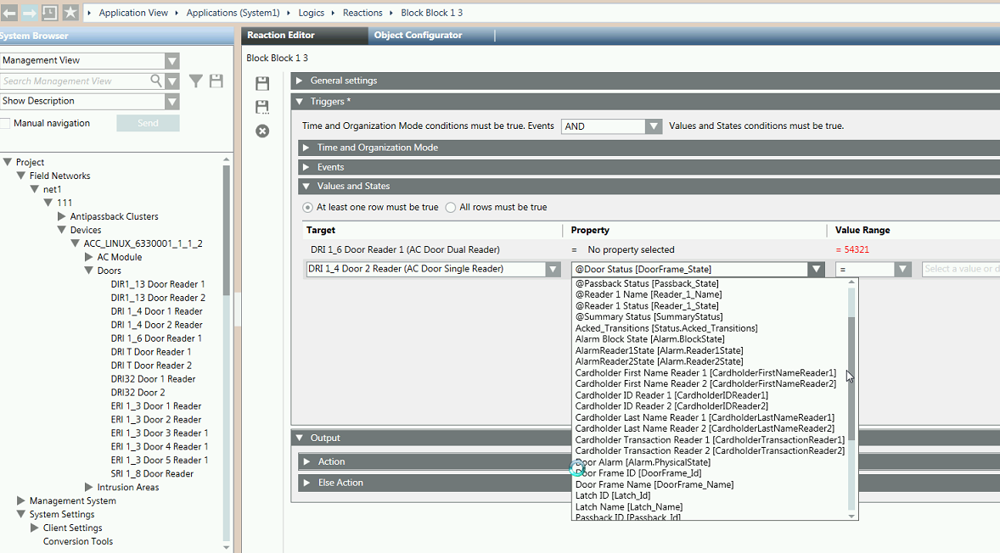
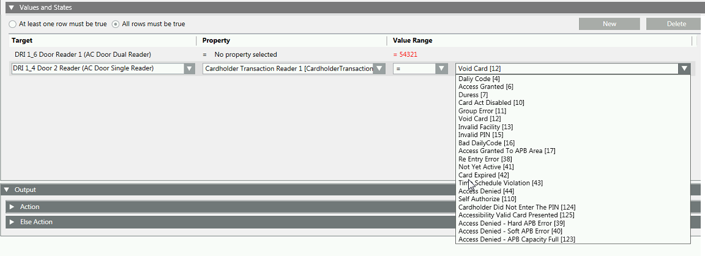

SiPass Cardholder Properties
When a SiPass access control system is integrated into the management platform, you can use cardholder-specific properties of doorobjects in automation logic such as Reactions or Scripts .
Specifically, each door object has the following cardholder properties. These are updated each time a cardholder transaction happens, and reset to zero after a timeout (5 seconds by default):
Property | Type | Description |
Cardholder First Name Reader 1 | string | The person’s first name. |
Cardholder Last Name Reader 1 | string | The person’s last name. |
Cardholder ID Reader 1 | numeric | The person’s badge ID. |
Cardholder Transaction Reader 1 | numeric | Code corresponding to the transaction on the reader. For example, |
CardholderGIDReader 1 | string | The person’s employee ID Number. Available only for SiPass servers configured with Mifare GID license, to associate employee numbers to specific cardholders. |
For a Dual ReaderDoor configuration, the Reader 1 / Reader 2 versions of each cardholder property correspond to the entry / exit card readers of the same door. For a 2Single ReaderDoors configuration, always use the Reader 1 version of the cardholder property.
Cardholder Properties for Triggering Reactions
You can use cardholder properties in the Values and States expander, to define the combination of conditions that will trigger an Action (or Else Action) in a Reaction.


Reaction Examples
To trigger an action whenever a specific person, named Erwin Tan, is granted access through the door, configure the following rows in the Values and States expander:
Target Object | Property and Value |
[Door Reader] | Cardholder First Name = Erwin |
[Door Reader] | Cardholder Last Name = Tan |
[Door Reader] | Cardholder Transaction = Access Granted |
And select the All rows must be true check box. Then in the Action expander select what you want to happen when that person enters (for example, turn on the lights, and so on).
For a detailed step-by-step example see [Example] Using SiPass Cardholder Properties to Trigger a Reaction.
For more information on configuring Reactions, search for the following topics: “Triggers and Filters Reference”, “Input Triggers of a Reaction”, “Values and States Conditions Reference”, and “Reactions Reference”.
Scripts Example
You can similarly use cardholder properties in scripts.
For an example see [Example] Using SiPass Cardholder Properties in a Script.
For more information on Scripts, search for “Scripts Reference” and “Configuring Scripts”.
Updating and Clearing of Cardholder Properties
Cardholder properties are set whenever a cardholder transaction happens, and then cleared (numbers: 0, strings: “”) after a timeout (default: 5 seconds). The timeout can be configured in the Reaction Trigger Timeout property of the SiPass server, visible only in Extended Operation.
The Values and States trigger is evaluated when you save the reaction, and then again each time any property has a change-of-value (COV), including when the property values are cleared after the timeout. Therefore, make a note of the following:
- If you configure any rows that would evaluate to TRUE when the Value of the property is 0 for numbers, or “” for strings: these might cause the reaction to be triggered when the properties are cleared.
- If you configure multiple rows with At least one rowmust be true, the reaction may be triggered when a property value is cleared, if at least one other row still evaluates to true.